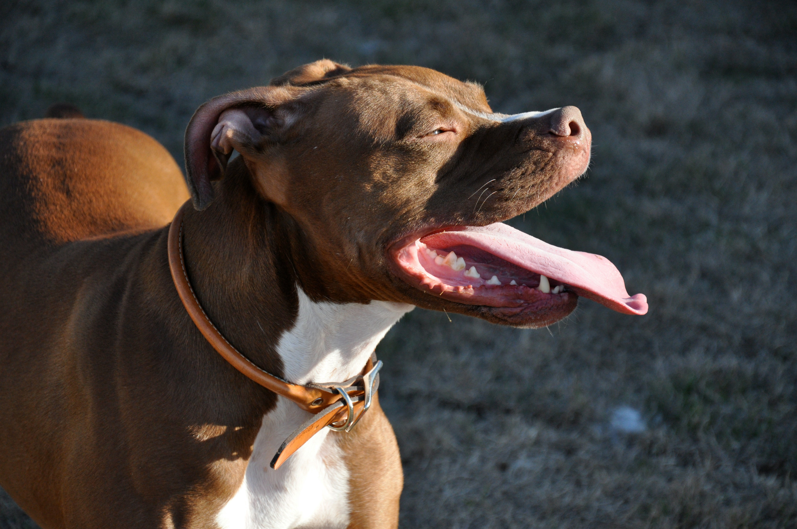
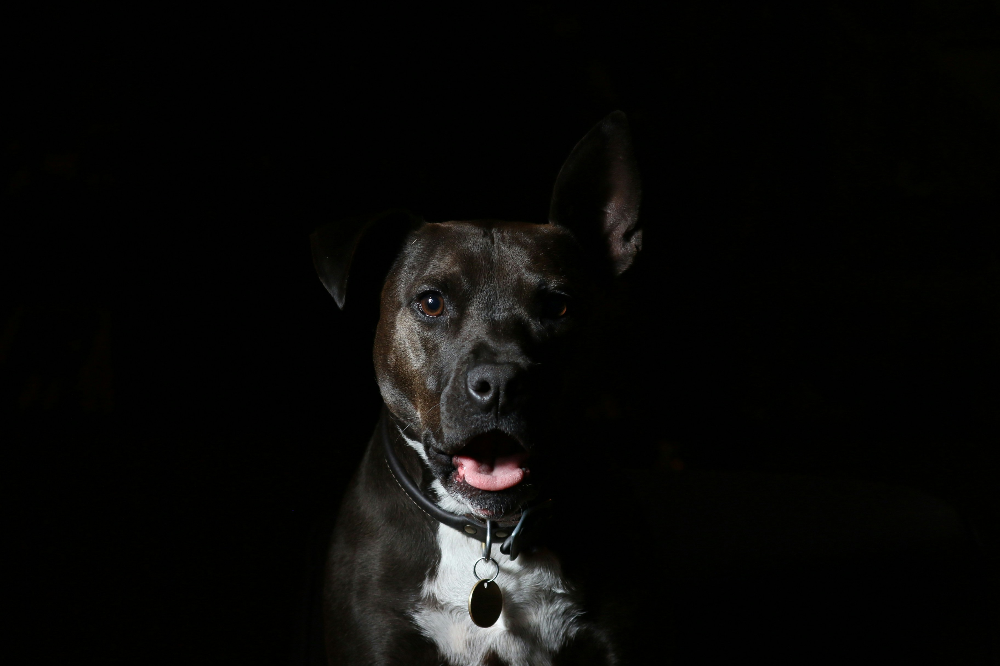

Find your perfect furry companion
among our wonderful selection of adoptable pets!
DAISY
Pet Description
Daisy
Pet Type : Dog
Breed : Aspin
Gender : Female
Color : Black
Age : 3

OUTWORLD DESTROYER
Pet Description
Outworld Destroyer
Pet Type : Dog
Breed : PitBull
Gender : Female
Color : Brown
Age : 4

LIL CAT
Pet Description
Lil cat
Pet Type : Cat
Breed : british shorthair
Gender : Female
Color : grey
Age : 3

CUPCAKE
Pet Description
Cupcake
Pet Type : Dog
Breed : PitBull
Gender : Female
Color : Black
Age : 2

JOSIAH
Pet Description
Josiah
Pet Type : Cat
Breed : orange
Gender : Male
Color : Orange
Age : 3

ANTHONY
Pet Description
Anthony
Pet Type : Dog
Breed : Aspin
Gender : Male
Color : Brown
Age : 7